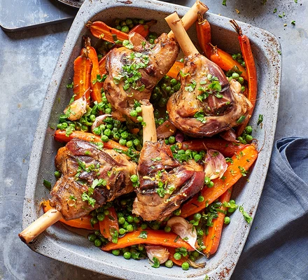

Lamb Shank

Description
Lamb shank is a cut of meat from the lower leg of a lamb, prized for its rich flavor and succulent texture when slow-cooked.
The cut is naturally tough due to connective tissue, but this breaks down during long, slow cooking methods like braising,
resulting in a tender, melt-in-your-mouth result.
The bone adds flavor and richness, making it a popular choice for hearty, comforting meals.